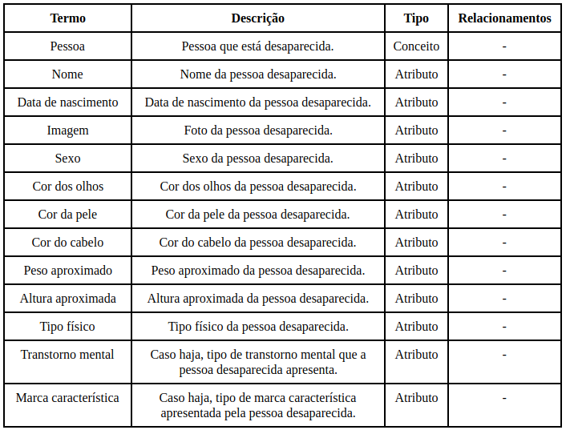
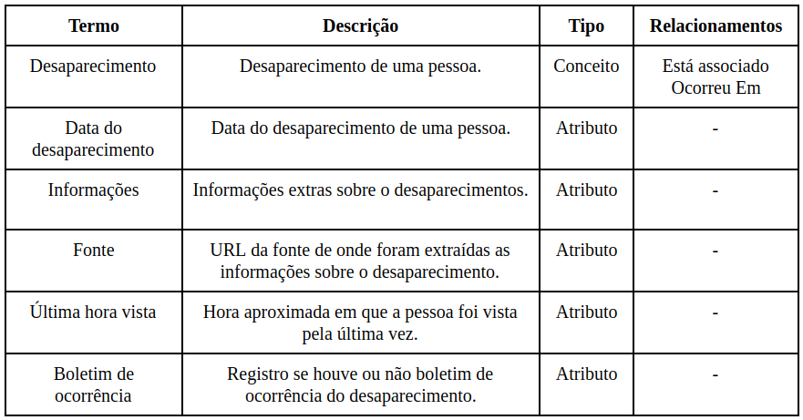
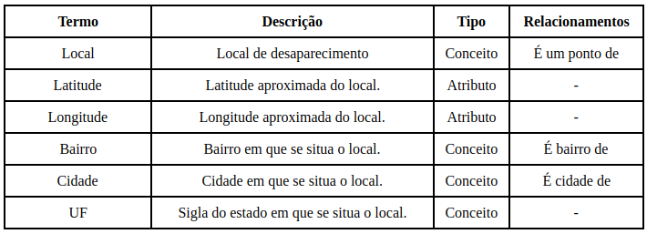
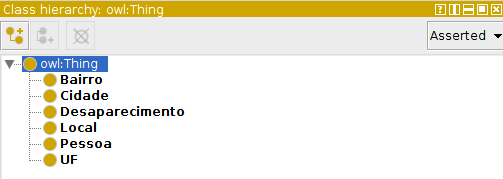
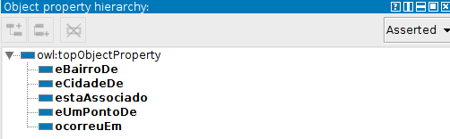
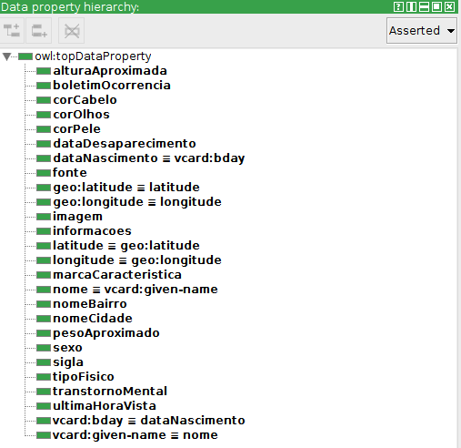
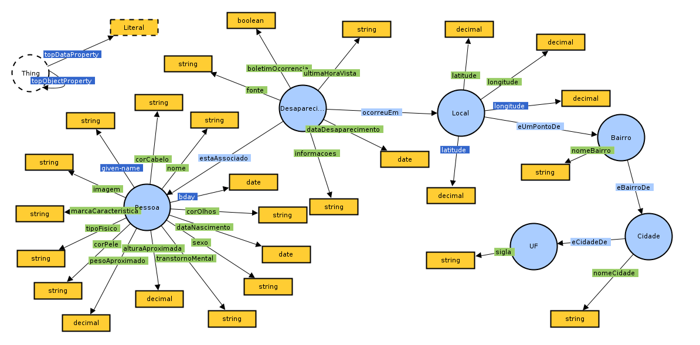

Especificação
Domínio: Pessoas desaparecidas
Data: 07/02/2019
Conceitualizada por: Mayara Marques e Thiago Frazão
Implementada por: Mayara Marques e Thiago Frazão
Propósito: Estruturar as informações sobre pessoas desaparecidas e facilitar a publicação desses dados de maneira compatível com sistemas de agentes inteligentes.
Nível de formalidade: Semi-formal.
Escopo:
- Características físicas de um indivíduo.
- Sexo, cor dos olhos, cor da pele, cor do cabelo, peso, altura, tipo físico, transtorno mental, marca característica;
- Dados pessoais de um indivíduo.
- Nome, data de nascimento;
- Informações relacionadas ao desaparecimento de um indivíduo.
- Data do desaparecimento, bairro de desaparecimento, cidade de desaparecimento, informações do desaparecimento;
Fontes de conhecimento:
- Artigo sobre o Projeto Myosotis para pessoas desaparecidas.
- Sites públicos contendo informações sobre casos de desaparecimentos de pessoas.
Usuários:
- Colaboradores de organizações e entidades que se relacionem com casos de pessoas desaparecidas.
- Pesquisadores com interesse no assunto de pessoas desaparecidas.
- Desenvolvedores de sistemas que necessitem de um vocabulário comum para domínio de pessoas desaparecidas.
Casos de uso:
- Utilizar um vocabulário comum sobre o domínio de pessoas desaparecidas.
- Disponibilizar dados de pessoas desaparecidas em um formato aberto.
- Construção de um sistema de agentes inteligentes para casos de pessoas desaparecidas.
Ontologias possivelmente reutilizáveis:
- Friend of a Friend (F.O.A.F)
- HCard
- Geonames
- Basic Geo Vocabulary
Aquisicação de conhecimento
Técnica utilizada:
- Análise informal: Foi feita uma análise informal de textos com intuito de estudar os principais conceitos do domínio.
- Análise formal: Foi feita uma análise formal de textos com intuito de extrair definições, conceitos, atributos e relacionamentos.
Glossário de termos possivelmente relevantes:
- Nome: nome da pessoa desaparecida.
- Data de nascimento: data de nascimento da pessoa desaparecida.
- Sexo: classificação sexual da pessoa.
- Cor dos olhos: cor dos olhos da pessoa desaparecida.
- Cor da pele: cor da pele da pessoa desaparecida.
- Cor do cabelo: cor do cabelo da pessoa desaparecida.
- Peso: peso aproximado da pessoa desaparecida no momento do desaparecimento.
- Altura: altura aproximada da pessoa desaparecida no momento do desaparecimento.
- Tipo físico: tipo físico da pessoa.
- Transtorno mental: se a pessoa desaparecida possui algum transtorno mental, se sim qual.
- Marca característica: se a pessoa desaparecida possui alguma marca característica que auxilie na identificação.
- Foto: imagem/fotografia da pessoa.
- Data do desaparecimento: data em que a pessoa foi vista pela última vez.
- Bairro desaparecimento: bairro em que a pessoa foi vista pela última vez.
- Cidade desaparecimento: cidade em que a pessoa foi vista pela última vez.
- UF desaparecimento: estado em que a pessoa foi vista pela última vez.
- Informações desaparecimento: informações relevantes sobre o desaparecimento.
- Boletim de ocorrência: se foi feito boletim de ocorrência ou não.
- Última hora vista: hora aproximada em que a pessoa foi vista pela última vez.
Conceitualização
As informações coletadas através da análise informal e formal de textos sobre o domínio permitiram a criação de glossários de termos e uma tabela de atributos de classe. Os glossários de termos incluem conceitos, propriedades e relacionamentos considerados relevantes no domínio para fazer parte da ontologia. A tabela de atributos de classe permite especificar quais termos são classes do domínio e os atributos que pertencem a cada classe.
Glossários de termos
  Tabela de atributos de classe
Integração
As ontologias integradas a ontologia Relembrar:
- VCARD
- Appearances
- Basic Geo
| Termo na Relembrar | Ontologia original | Termo na ontologia original |
|---|---|---|
| Nome | VCard | give-name |
| Data de Nascimento | VCard | bday |
| Latitude | Basic Geo | Lat |
| Longitude | Basic Geo | Long |
Implementação
A partir do modelo informal foi gerado o modelo formal para a ontologia. Para auxiliar o processo de construção da ontologia foi utilizada a ferramenta Protégé de apoio ao desenvolvimento de ontologias em sua versão 5.2.0. A linguagem da ontologia é a OWL2 e sua sintaxe RDF/XML.
Criando classes
Criando propriedades dos objetos
Criando propriedades dos dados
Modelo visual da ontologia Relembrar
Avaliação
A avaliação da ontologia criada consistiu em dois processos, validação e verificação.
Validação
- A validação da ontologia foi executada através da análise do modelo de ontologia criado. Esta análise visou perceber se a ontologia de fato atendia o domínio que se propôs a representar.
Verificação
- Para a verificação foram elaboradas as questões de competências que a ontologia deveria responder. Essas questões são perguntas que geralmente poderiam ser feitas para o modelo representado pela ontologia. Tais questões seriam futuramente convertidas para uma linguagem artificial.
- Quais foram as pessoas que desapareceram em uma cidade qualquer?
- Quais foram as pessoas que desapareceram em um UF qualquer?
- Quais foram as pessoas que desapareceram em um bairro qualquer?
- Quais foram as pessoas que desapareceram dentro de um período de tempo?
- Qual bairro que tem maior número de desaparecimentos de uma dada cidade?
- Quais são pessoas que desapareceram dentro de uma faixa etária?
- Qual cidade detém o maior número de desaparecimentos de adolescentes (12 até 18 anos)?
- Quais são as pessoas que desapareceram há menos de 10 anos?
- Quais pessoas de cor da pele negra que desapareceram?
- Qual UF apresenta maior número de pessoas desaparecidas de cor da pele negra?
Algumas questões de competências convertidas para consultas SPARQL:
- Quais foram as pessoas que desapareceram em uma cidade qualquer?
- Quais são pessoas que desapareceram dentro de uma faixa etária?
- Quais pessoas de cor da pele negra que desapareceram?
SELECT ?nome
WHERE
{
?cidade ?a "Nova Iguaçu"^^xsd:string.
?bairro ?b ?cidade .
?local ?c ?bairro .
?desaparecimento ?d ?local .
?desaparecimento relembrar:estaAssociado ?pessoa.
?pessoa relembrar:nome ?nome
}
SELECT ?nomePessoa ?idade
WHERE
{
bind (25 as ?limiteInferior)
bind (35 as ?limiteSuperior)
bind (year(now()) as ?anoAtual) .
?pessoa relembrar:dataNascimento ?dataNascimento .
?pessoa relembrar:nome ?nomePessoa.
bind (?anoAtual - year(?dataNascimento) as ?idade) .
filter (?limiteInferior < ?idade && ?idade < ?limiteSuperior)
}
SELECT ?nome
WHERE
{
?pessoa relembrar:corPele "negra"^^xsd:string.
?pessoa relembrar:nome ?nome
}